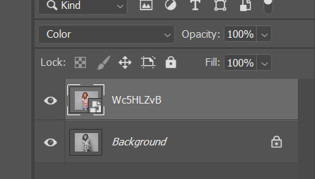
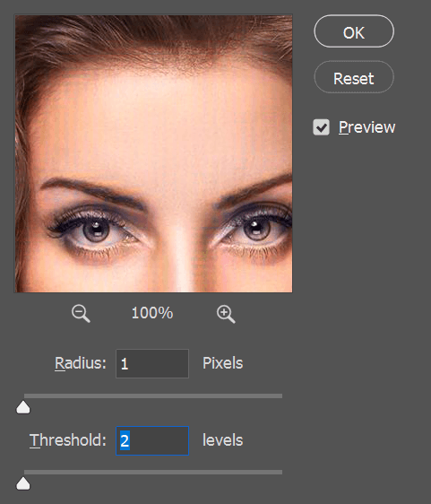
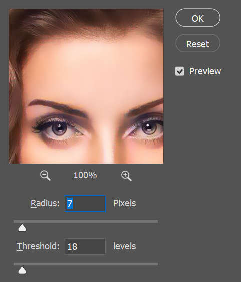
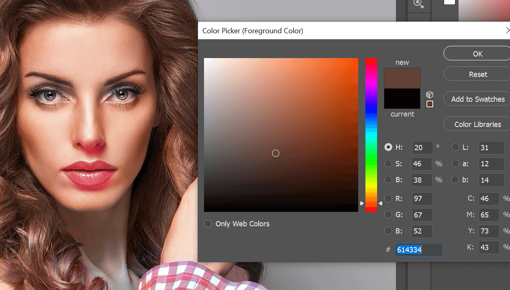
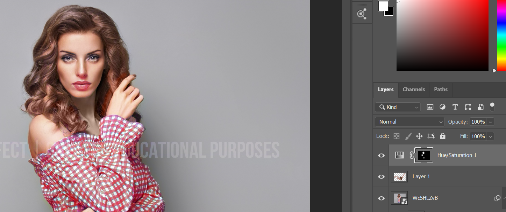

快速给黑白照上色 in Photoshop

如果你需要给黑白照片添加颜色，这个教程可以帮助你快速完成。它通过把照片上传到一个免费的网站来自动给照片上色，然后再 Photoshop 中对自动处理不完美的地方进行精细调整最终得到满意的效果。
免费上色网站地址为：https://imagecolorizer.com/
我们首先测试人像：
将图片上传到网站，等待自动处理完成后下载到本地：
自动处理结果如下，可以看到基本比较完善，但是细节处有一些偏色，色条和漏掉颜色的地方：
下面我们进入 Photoshop 进行处理，将原图和处理后的图片导入，将处理后的图层模式设置为 color，我们只用处理后的色彩信息：

首先处理皮肤表面的不规则色条，选择 filter - blur - furface blur，放大可以看到表面的色条：

调整 radius 和 threshold 使表面颜色平滑：

然后我们处理脖子部分的颜色丢失：
新建图层，混合模式改为 color，拾取附近色彩正常区域的颜色，快捷键 I：

使用画笔工具涂抹需要重新上色的区域：
面部饱和度过高，新建 hue 图层降低面部饱和度，配合蒙版操作：

最终效果如下：
标签：无